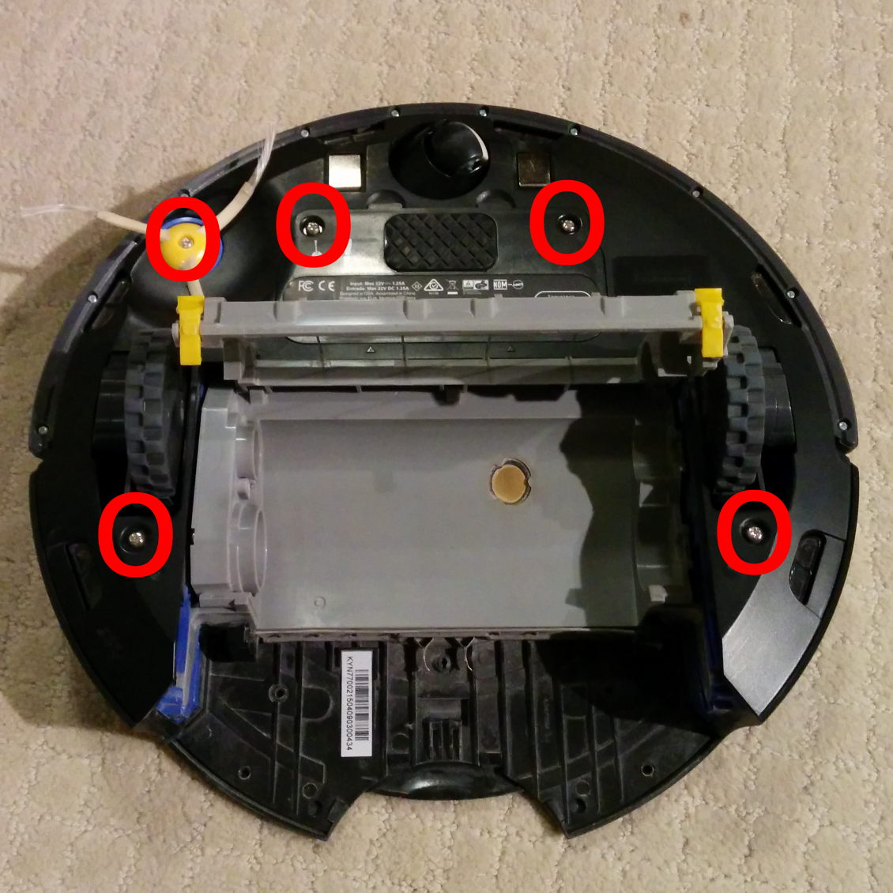
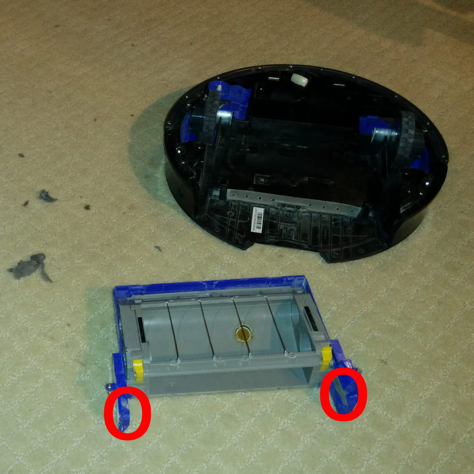
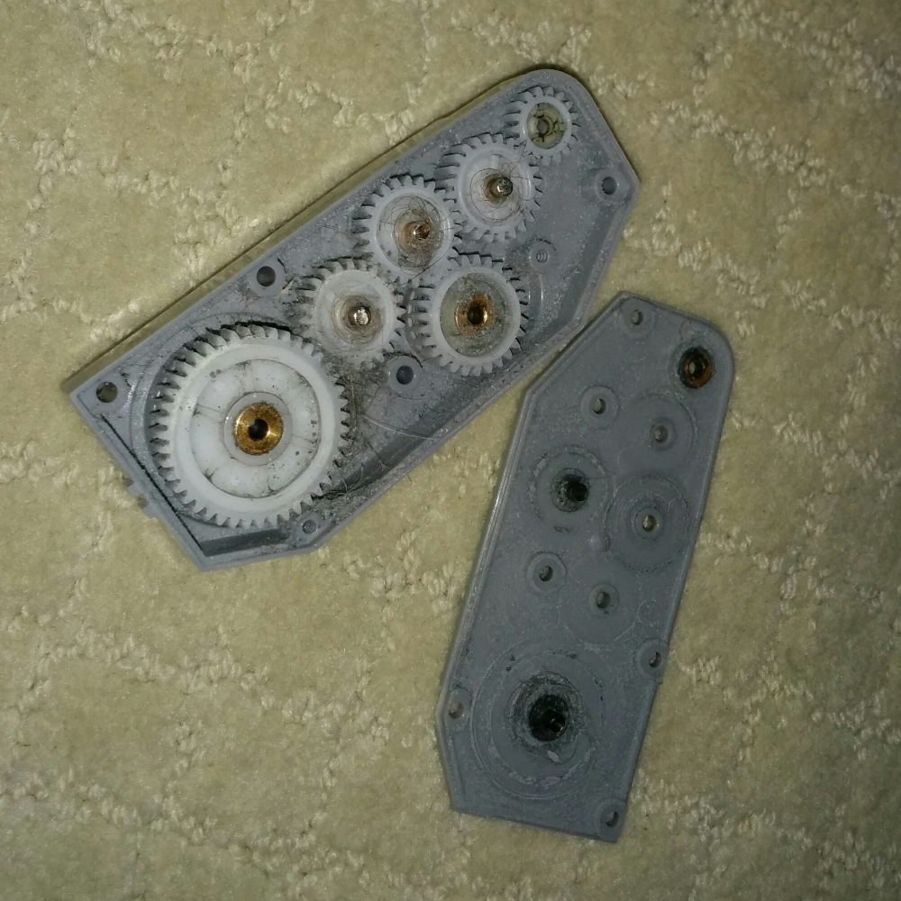
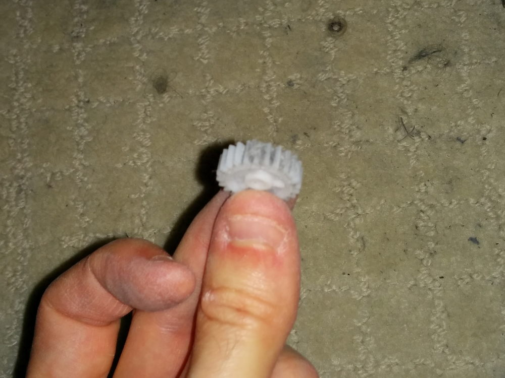

Roomba cleaning
When I first heard about the Roomba robotic vacuum cleaner, it sounded like something for the truly lazy -- how hard is it to spend ten minutes vacuuming your floor once a week?
Then I tried it.
When I first moved into my condo, I borrowed my brother's Roomba for a week. By chance, my parents went on holiday for two weeks after that, so I borrowed their Roomba. By that point, I was hooked.
You see, it's not a matter of "vacuuming your floor once a week". When I had a robotic cleaner with an easily-cleanable dustbin, I ran it once a day. And that wasn't me being paranoid -- I emptied that dustbin every day so I could see how much dust it was removing from my environment.
After 2.5 years of use, my Roomba started showing a blue starfish error light, and it made a "clunking" sound as if it couldn't get into gear. Time for some serious cleaning!
Cleaning
(There's a few youtube videos about this floating around, but I was annoyed at having to watch a 5-minute video to get this info when a few images and text would have done it just fine.)
First, remove the yellow brushes (with 1 small screw) and the 4 main screws:

Next, remove the 4 small screws holding the blue-and-grey "brush box" and lift it out:

Now bend the blue arms backwards so that you can pop the grey plastic out. There's a wire connecting the back of the blue and grey part (see the next two images), which you can leave connected:

This is sufficiently detached. Look at the right-hand side of the grey box (in the below image). You want to undo 5 screws.

Here's the gear-box! Looks fairly icky thanks to my long hair:

Close-up of one of the gears. Some of those gear-teeth are completely jammed with dust (a bit hard to tell since the dust reflected the light):

In addition to removing the hair, I also used a small screwdriver to clean out the gear-teeth. I happily put the Roomba back together again -- but the problem persisted.
After a few more disassembly-and-cleaning attempts, it occurred to em that in addition to removing the hair and dust, I'd also removed any grease and oil. I added some bicycle grease, put it back together, and the Roomba worked perfectly!
(I suspect that bicycle grease isn't ideal type of lubricant for this purpose, but that's what I had easily available to me.)